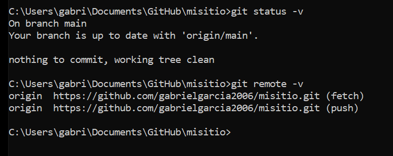
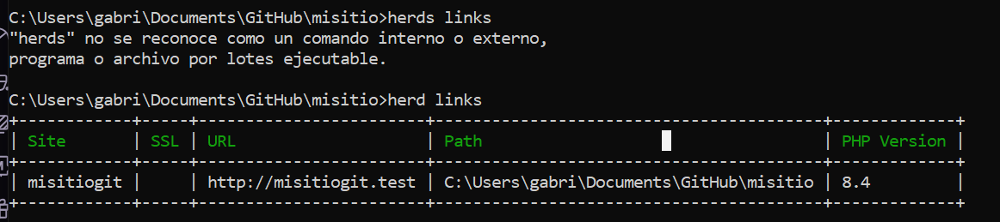
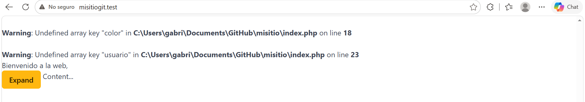

Práctica 01
Git instalado y configurado
He comprobado que Git está instalado correctamente en el equipo.
/** En la captura se puede ver la versión de Git instalada. */
)
GitHub CLI instalado y configurado
He comprobado que GitHub CLI está instalado y que tengo la sesión iniciada correctamente.
/** En la captura se ve la versión de GitHub CLI y el estado de autenticación. */

Herd y PHP 8.4
He comprobado que Laravel Herd está instalado y que estoy utilizando PHP 8.4
/** En la captura se puede ver la versión de Herd y la versión de PHP. */

Repositorio clonado en local
He comprobado que el repositorio misitio está clonado en local y conectado con GitHub.
/** En la captura se muestra el repositorio remoto configurado. */

Herd enlazado al proyecto
He comprobado que Herd tiene enlazado correctamente el proyecto misitio.
/** En la captura se puede ver el proyecto dentro de los enlaces de Herd. */

Proyecto funcionando con HTTPS
He comprobado que el proyecto funciona correctamente desde https://misitio.test.
/** En la captura se puede ver la página cargada mediante HTTPS. */

Herramientas utilizadas
Para realizar la práctica he utilizado Git, GitHub CLI, Laravel Herd, PHP 8.4 y ProperDocs.
/** La documentación está escrita en Markdown y las capturas están guardadas dentro de docs/img. */